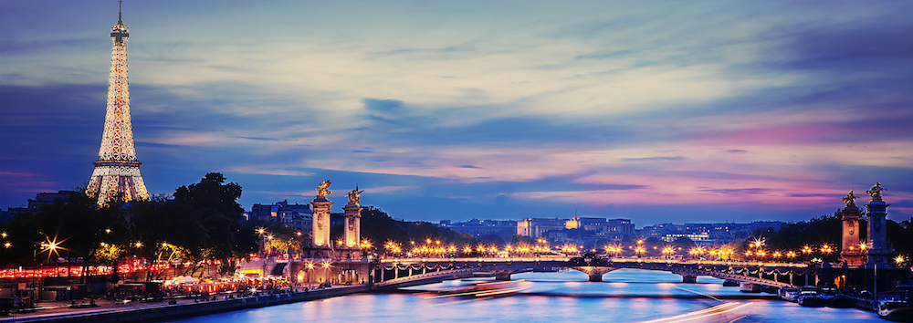

My Dream Vacation
My dream vacation is touring Paris, France. There is just so much history and culture there, it is definitely at the top of my list for places I would like to see before I die.

Paris Picture
https://www.google.com/url?sa=i&rct=j&q=&esrc=s&source=images&cd=&cad=rja&uact=8&ved=0ahUKEwikjvWWgenWAhVJwWMKHaMgDzgQjRwIBw&url=http%3A%2F%2Fhostedvillas.com%2Four-destinations%2Feurope%2Fparis-france&psig=AOvVaw3rp-2dtg72gdg7GZmXWn8l&ust=1507826393673297
Croissant Marker
http://pngimg.com/imgs/food/croissant/index.html
Eiffel Tower Marker
http://moziru.com/explore/Background%20clipart%20eiffel%20tower/